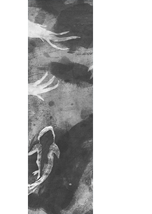
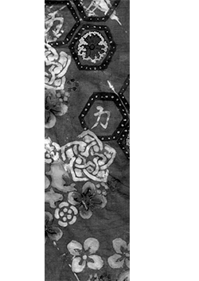
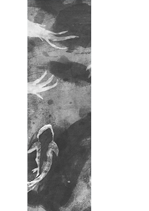
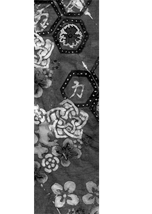
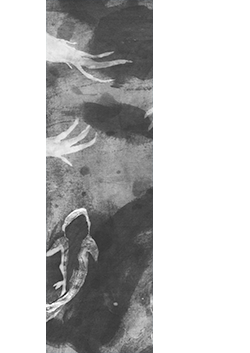
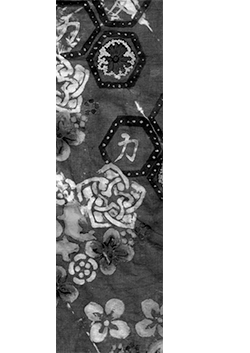

This collection of dyed textiles was inspired from the Japanes furoshiki, a wrapping and carrying cloth. The cloth was first used in the mid-Nara Era in traditional Japanese baths. To prevent a mix up of the bathers' clothes, the removed clothing was tied up in a furoshiki. Later the systm of folding spread and was used by traders to protect their goods or gifts. Currently, furoshiki are made of different fabrics, including silk, cotton, rayon, and nylon.
The traditional furoshiki took inspirations from nature. Like the traditional ones, I am taking inspirations from Japan's nature. From the pop culture of Japan I took the bright colors as an inspiration and combined it with Japan's traditional motif such as the noshi and koi fish.

